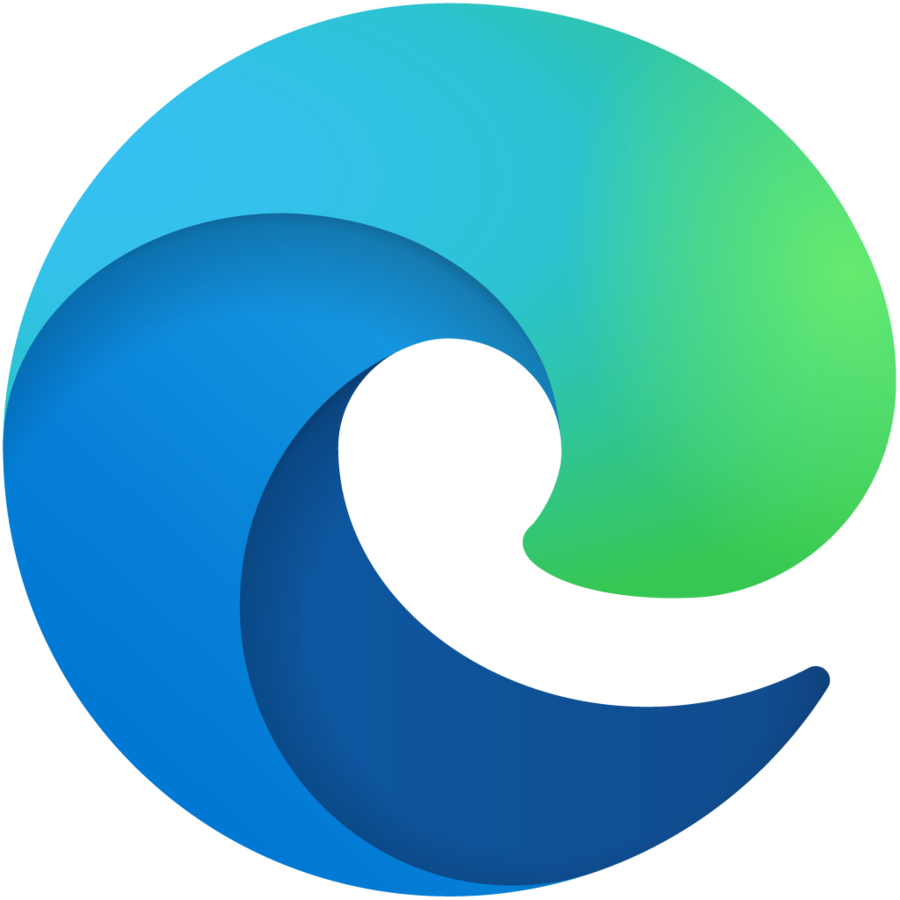
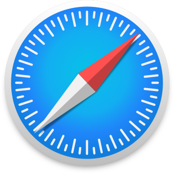
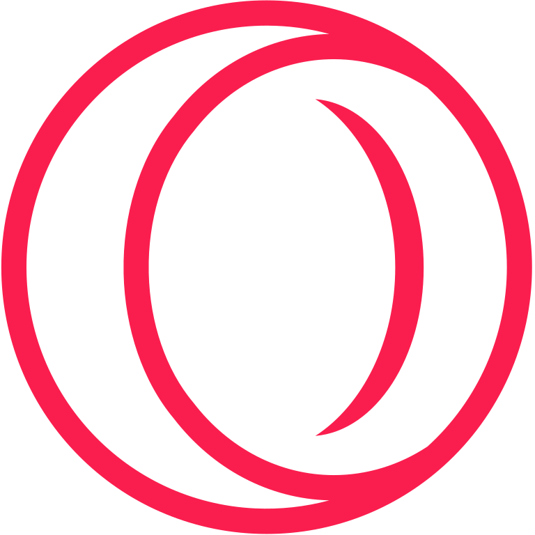

Danh sách 10 trình duyệt web
Nguyễn Bá Anh Minh CNTT_I K48

1.Google Chrome
Ngày phát hành: 2 tháng 9 năm 2008
Phiên bản mới nhất: 118.0.5993.117
Nhà sản xuất: Google LLC
Điểm mạnh: Nhanh chóng, hỗ trợ nhiều tiện ích mở rộng, đồng bộ hóa tốt giữa các thiết bị.
Điểm yếu: Ngốn nhiều RAM, không tốt về bảo mật quyền riêng tư.
2.Mozilla Firefox
Ngày phát hành: 23 tháng 9 năm 2002
Phiên bản mới nhất: 118.0
Nhà sản xuất: Mozilla Foundation
Điểm mạnh: Tập trung vào bảo mật và quyền riêng tư, nhẹ hơn so với Chrome.
Điểm yếu: Tốc độ xử lý có thể chậm hơn Chrome trong một số trường hợp.

3.Microsoft Edge
Ngày phát hành: 8 tháng 4 năm 2019
Phiên bản mới nhất: 118.0.2088.56
Nhà sản xuất: Microsoft
Điểm mạnh: Hiệu suất tốt hơn Internet Explorer, tích hợp với Windows, tiết kiệm pin cho laptop.
Điểm yếu: Phụ thuộc vào hệ sinh thái của Microsoft.

4.Safari
Ngày phát hành: 7 tháng 1 năm 2003
Phiên bản mới nhất: 17.0
Nhà sản xuất: Apple
Điểm mạnh: Hiệu suất tốt trên các thiết bị Apple, tiết kiệm pin, giao diện đẹp.
Điểm yếu: Hạn chế tính tương thích với các nền tảng khác ngoài Apple.

5.Opera Gx
Ngày phát hành: 21 tháng 5 năm 2019
Phiên bản mới nhất: 102.0.4880.78
Nhà sản xuất: Opera Software
Điểm mạnh: Tích hợp VPN, trình chặn quảng cáo, chế độ tiết kiệm pin.
Điểm yếu: Thị phần nhỏ, không phổ biến như các đối thủ lớn.

6.Brave
Ngày phát hành: 13 tháng 11 năm 2019
Phiên bản mới nhất: 1.57.62
Nhà sản xuất: Brave Software
Điểm mạnh: Tôn trọng quyền riêng tư, chặn quảng cáo mặc định.
Điểm yếu: Một số tính năng như kiếm token có thể gây nhầm lẫn cho người dùng.
7.Vivaldi
Ngày phát hành: 6 tháng 4 năm 2016
Phiên bản mới nhất: 6.2.3105.58
Nhà sản xuất: Vivaldi Technologies
Điểm mạnh: Tùy biến cao, bảo mật tốt.
Điểm yếu: Cấu hình phức tạp, không phù hợp với người dùng cơ bản.
8.Torch
Ngày phát hành: 18 tháng 6 năm 2012
Phiên bản mới nhất: 69.2.0.1707
Nhà sản xuất: Torch Media Inc.
Điểm mạnh: Hỗ trợ tải phương tiện từ trang web, tích hợp torrent.
Điểm yếu: Nhiều tính năng cồng kềnh, không thân thiện với người dùng phổ thông.
9.Maxthon
Ngày phát hành: 2002
Phiên bản mới nhất: 7.1.6.1000
Nhà sản xuất: Maxthon Ltd.
Điểm mạnh: Giao diện tùy biến cao, tích hợp các dịch vụ đám mây.
Điểm yếu: Hiệu suất thấp hơn các trình duyệt hiện đại khác.
10.Yandex Browser
Ngày phát hành: 1 tháng 10 năm 2012
Phiên bản mới nhất: 23.7.0.2556
Nhà sản xuất: Yandex
Điểm mạnh: Tích hợp dịch vụ của Yandex, bảo mật mạnh mẽ.
Điểm yếu: Thị trường chủ yếu ở Nga, khó sử dụng ở các khu vực khác.